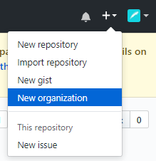
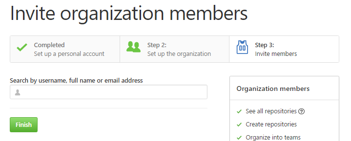
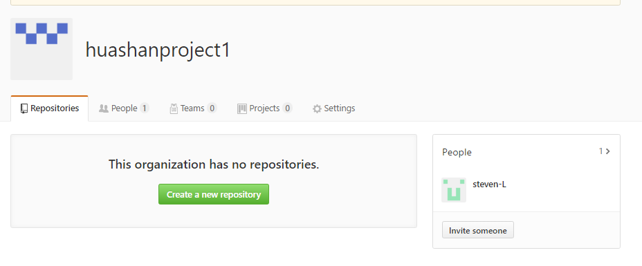
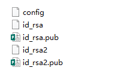

5 组织
除了个人帐户之外，GitHub 还提供被称为组织（Organizations）的帐户。 组织账户和个人账户一样都有一个用于存放所拥有项目的命名空间，但是许多其他的东西都是不同的。 组织帐户代表了一组共同拥有多个项目的人，同时也提供一些工具用于对成员进行分组管理。 通常，这种账户被用于开源群组（例如：“perl”或者“rails”），或者公司（例如：“google”或者“twitter”）
创建组织


当你邀请一个用户加入团队，该用户会收到一封通知他被邀请的邮件。

队友需要在自己的电脑里生成一个ssh key，将公钥（id_rsa.pub）里的内容拷出来给项目创建者，让创建者新建一个ssh key保存你的公钥。这一步做完了以后，队友就可以把自己的代码push到你们团队的这个repository里了。
多个ssh key
ssh key在github里是不允许重复使用，就是一个key只能对应github上的一个项目。
查看是否存在ssh key
cd ~/.ssh
ls
如果用户电脑里已经存在ssh key，那么需要使用ssh-keygen 生成多个密钥文件，之后在同级目录下创建config文件
mac:
open ~/.ssh
windows
打开 C:\Users\用户名\.ssh 文件夹
例：

config内容格式如下
Host github.com
HostName github.com
PreferredAuthentications publickey
User 1111111@qq.com
IdentityFile /C/Users/lihualong/.ssh/id_rsa
Host github.com
HostName github.com
PreferredAuthentications publickey
User 1111111@qq.com
IdentityFile /C/Users/lihualong/.ssh/id_rsa2